Data Integration Research Project
This UX research project focused on Oracle Cloud Infrastructure (OCI) Data Integration, aiming to uncover user needs, pain points, and opportunities for improving the product experience. Through interviews with five participants, we gathered qualitative insights into real user workflows and challenges.
I led the research effort end-to-end, ensuring alignment between design, product, and engineering teams. My responsibilities included:
These slides highlight a selection of key findings from a larger research study. The full 54‑page report synthesizes insights from in-depth participant interviews, focusing on user workflows, challenges, and opportunities for improving the experience.
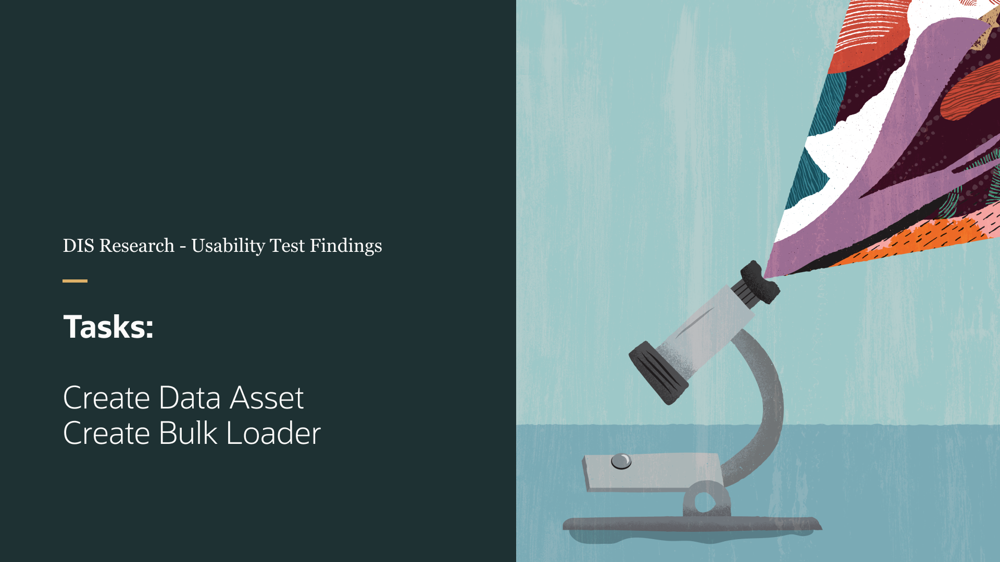
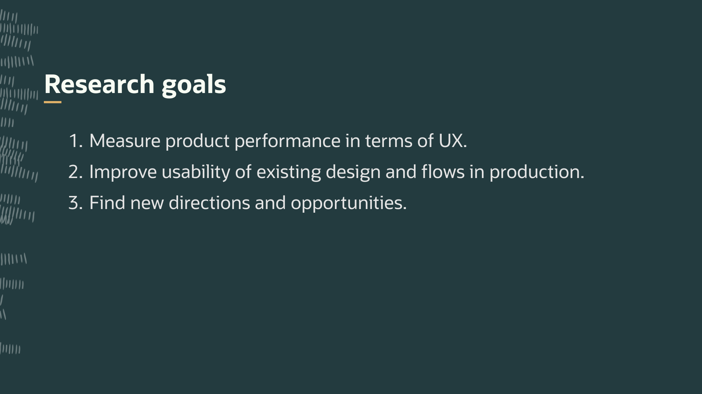
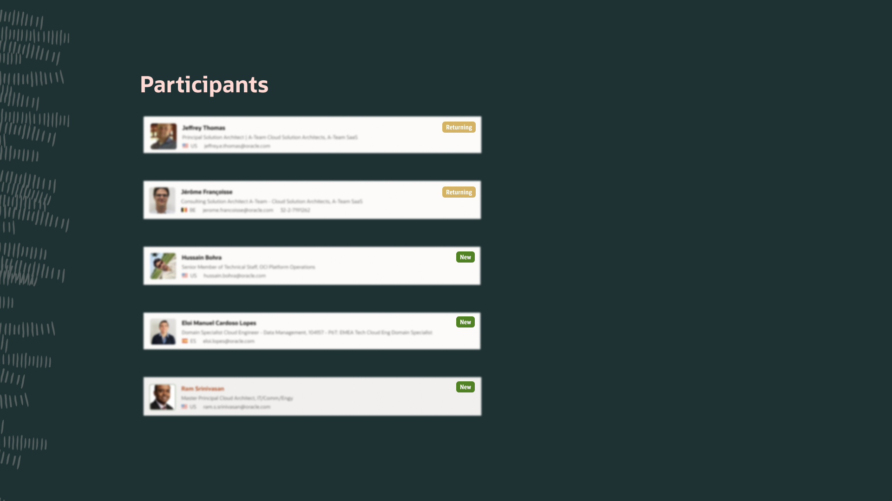
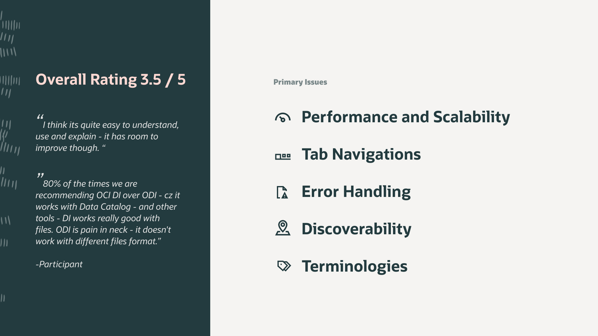
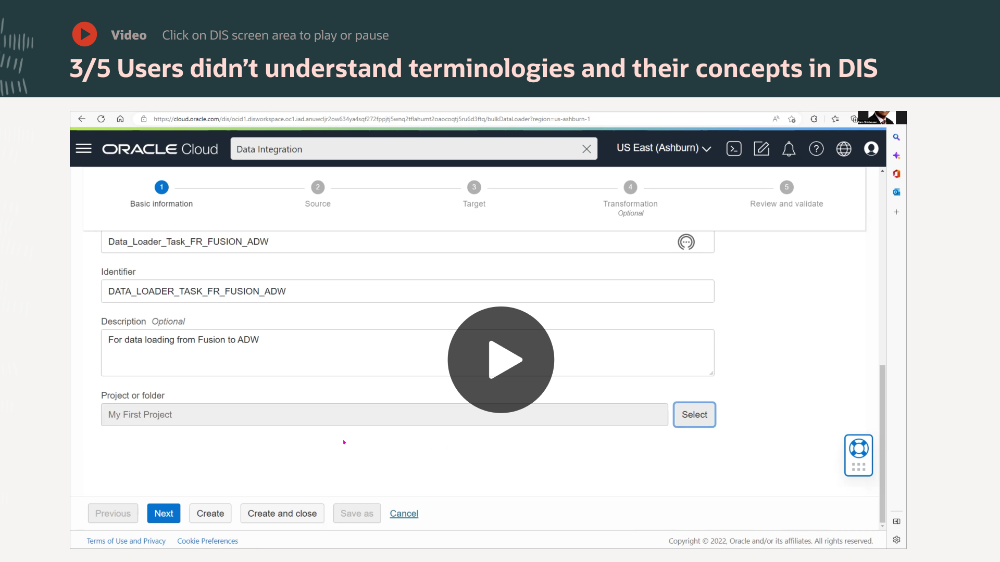
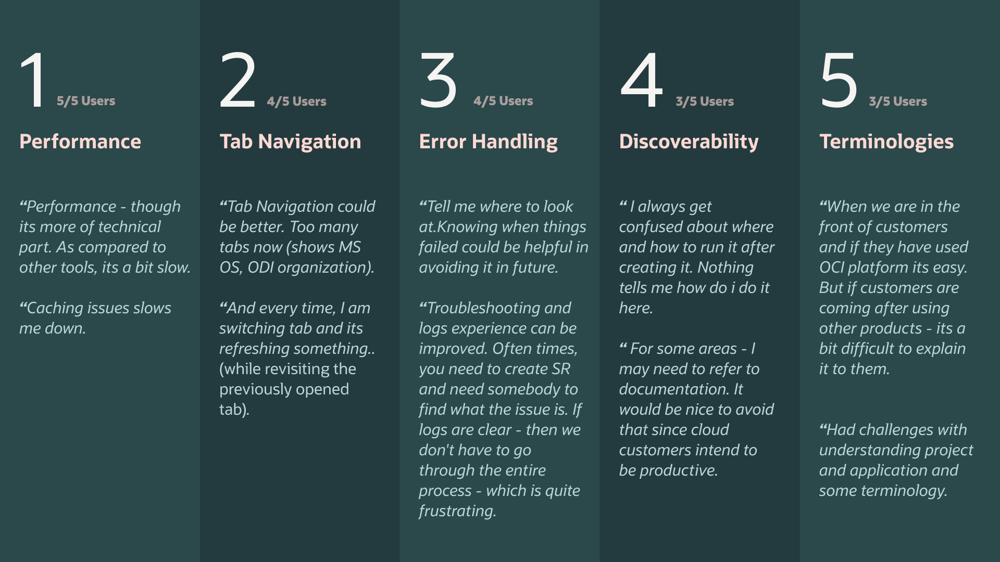
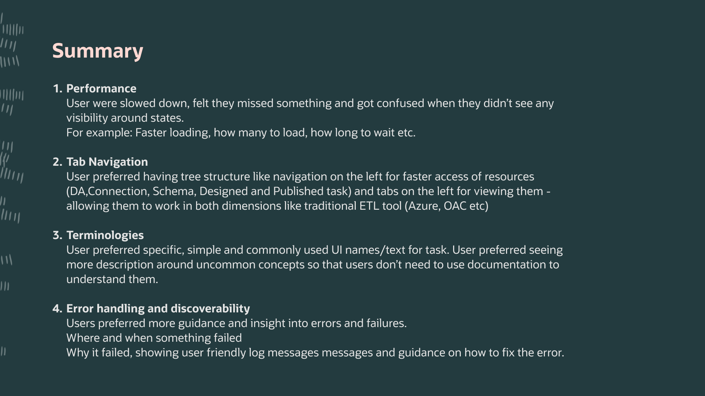
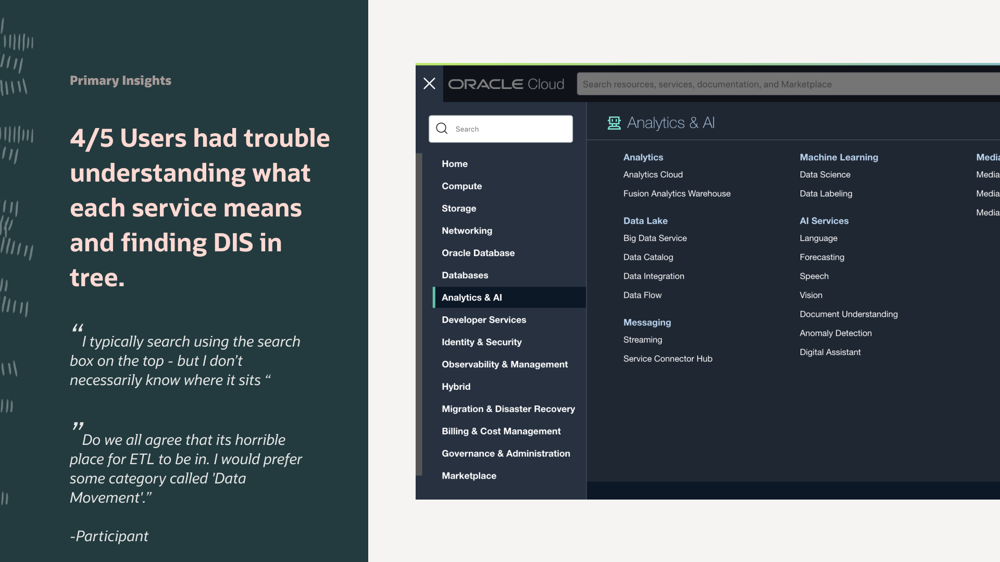
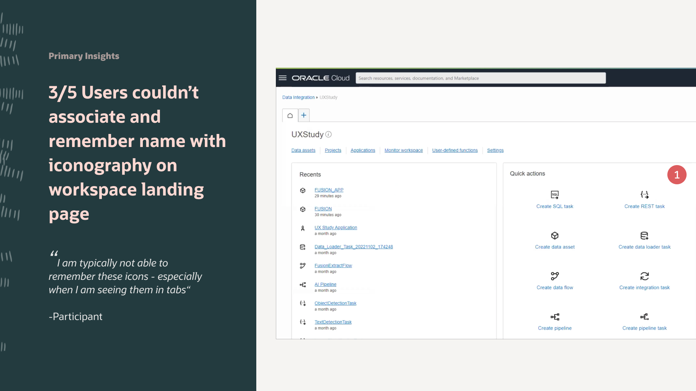
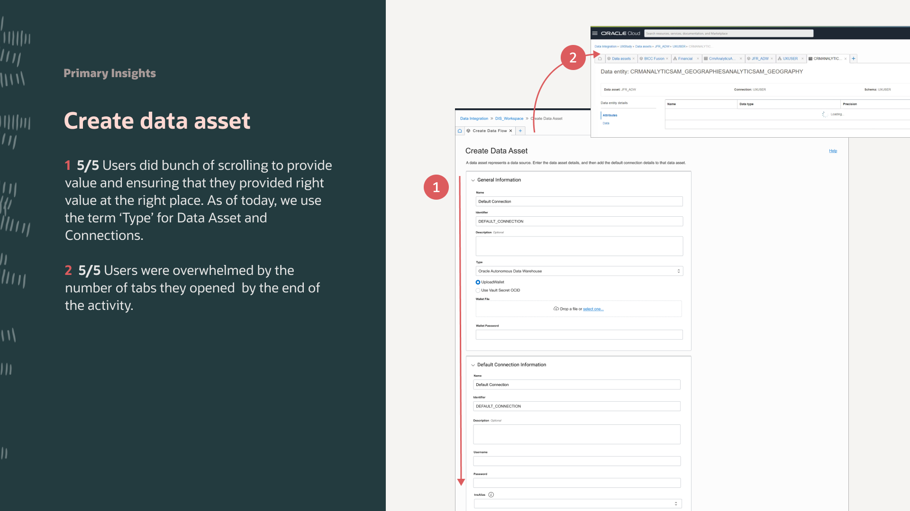
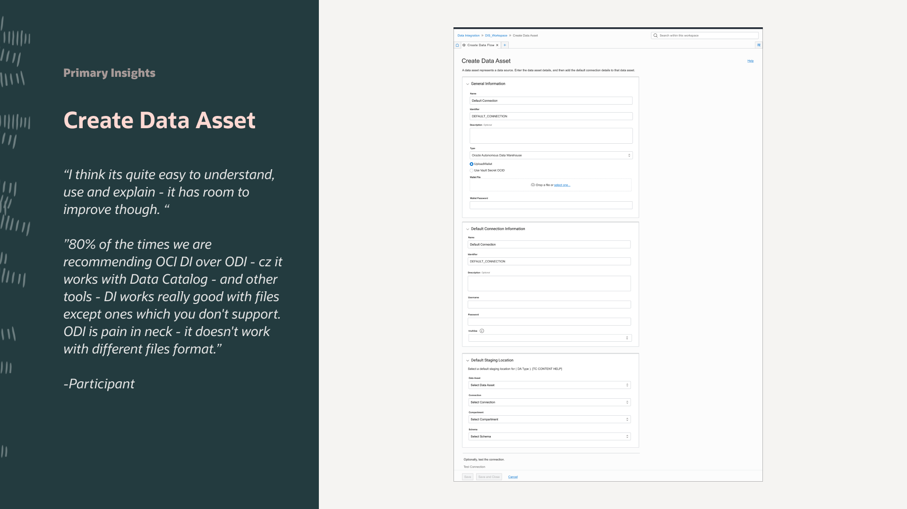
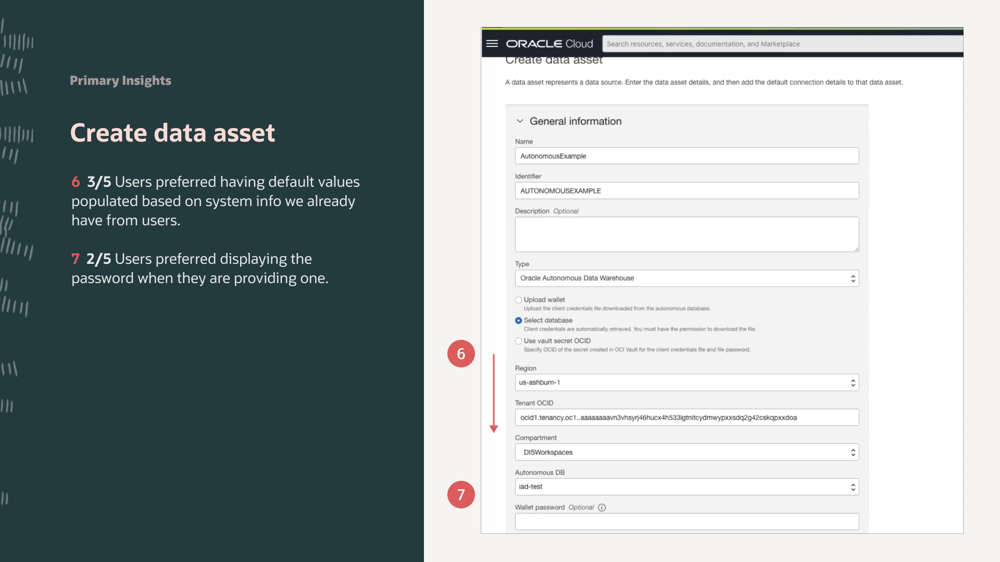
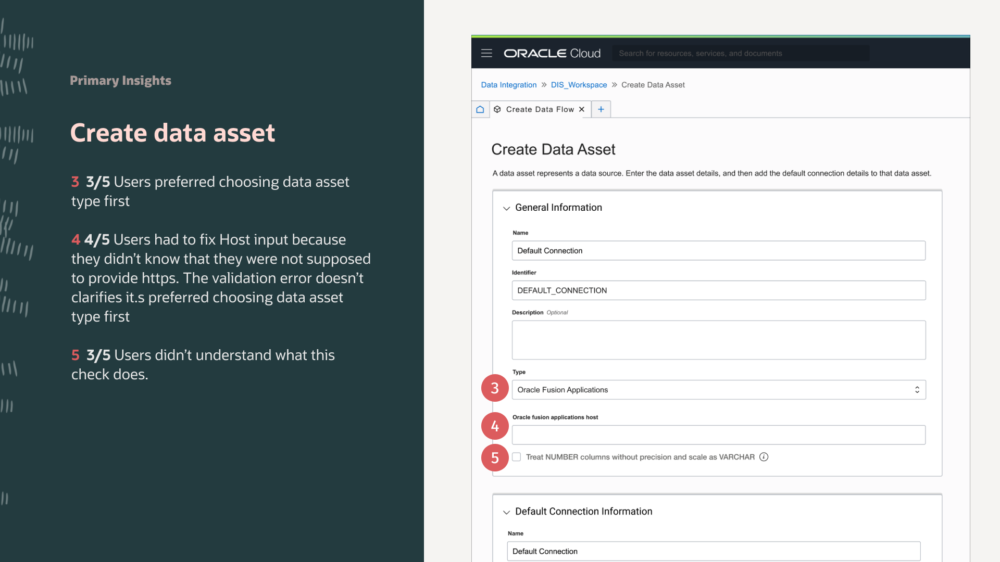
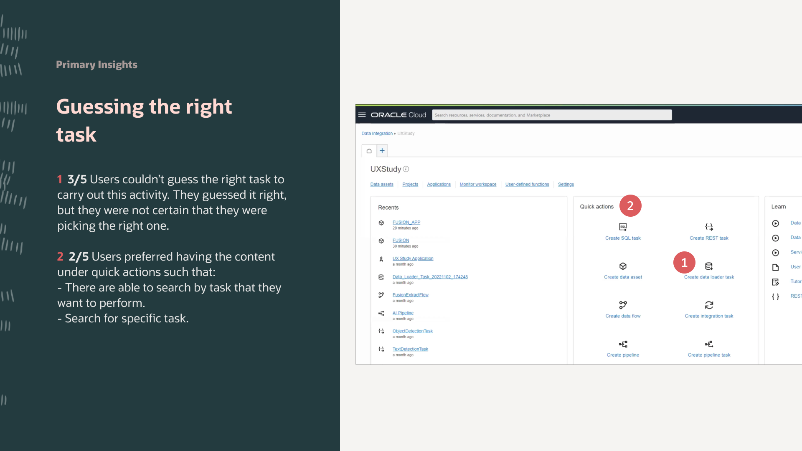
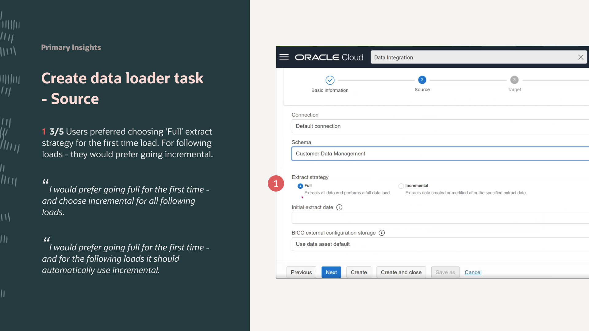
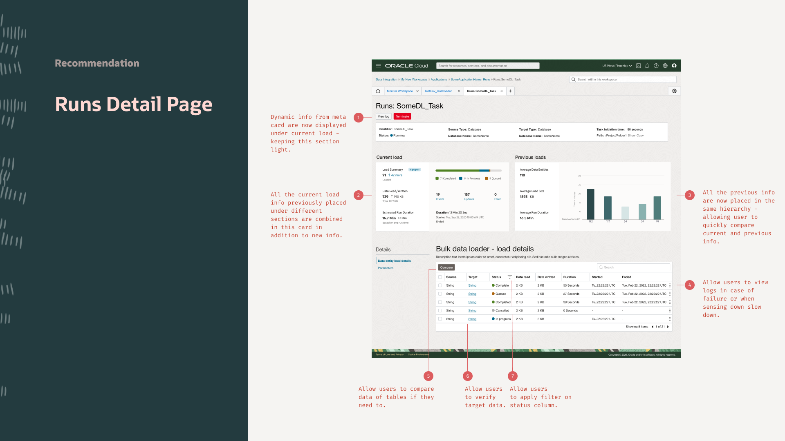
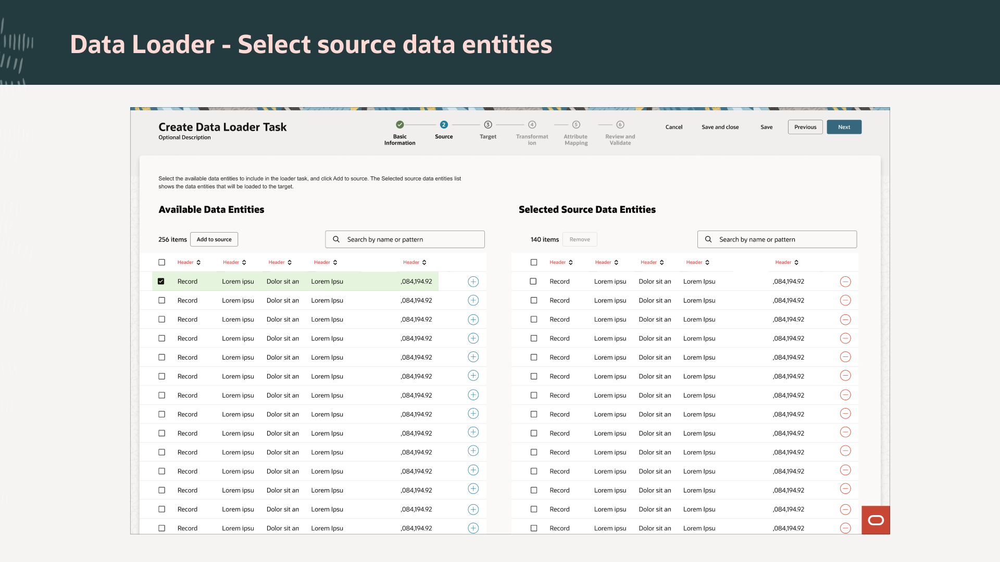
Based on the research findings, we collaborated with product and engineering to identify key areas for improvement and shape priorities. Focus areas included high-impact pain points such as data asset creation and data loader configuration, balancing user value with development effort.